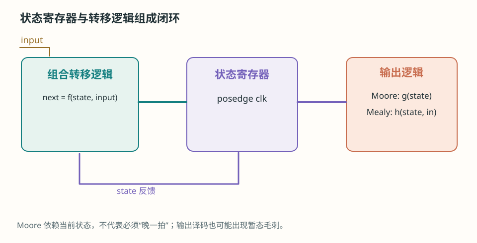
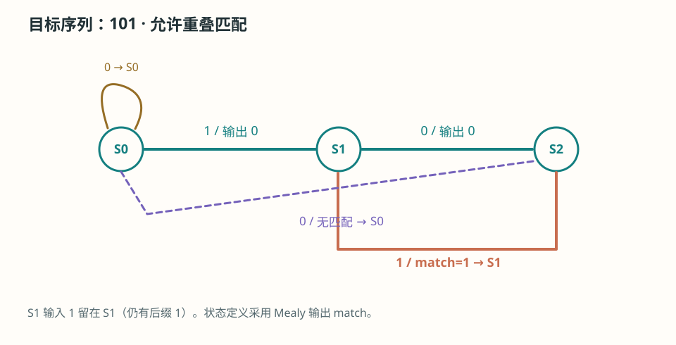

状态机不是流程图：把输入历史编码进寄存器
从状态转移、Moore/Mealy 输出语义，到支持重叠的 101 检测器及其可运行的时钟级验证。
01 / 为什么当前输入不足以知道有没有 101？
串行输入只在每个时钟沿提供一位。读到“1”时，它可能是新序列的第一位，也可能意味着之前的“10”已完整匹配为“101”。必须保存与未来判断有关的历史。
有限状态机将历史压缩成一个状态寄存器：本拍状态和本拍输入决定下一拍状态。形式上可以写作 next_state = F(state, input)。输出可以仅根据 state 解码（Moore），也可以由 state 与 input 共同决定（Mealy）；二者的本质区别是输出的依赖关系，不是“Moore 必然延迟一拍”。

未加寄存器的 Moore 输出仍可能由多个状态位组合译码得到，因此不能直接保证无毛刺。Mealy 输出依赖当前输入，若输入异步或未同步，尤其要考虑时序风险。
02 / 三个状态描述全部有用历史
检测目标为 101，允许重叠。定义 S0：无匹配前缀；S1：最近有用后缀是 1；S10：最近有用后缀是 10。这样在 S10 收到 1 即匹配 101，且该末尾 1 能成为下一次匹配的前缀。

| 旧状态 | 输入 0 | 输入 1 | 检测输出 |
|---|---|---|---|
| S0 | S0 | S1 | 0 |
| S1 | S10 | S1 | 0 |
| S10 | S0 | S1 | 输入 1 时为 1 |
序列 10101 的第三位和第五位都完成一个 101。若完成检测后简单回到 S0，就会漏掉第二次。
03 / 显式转移函数与寄存输出
module detect101 (
input wire clk, rst_n, bit_in,
output reg match
);
localparam [1:0] S0=0, S1=1, S10=2;
reg [1:0] state, next_state;
always @(*) begin
next_state = S0;
case (state)
S0: next_state = bit_in ? S1 : S0;
S1: next_state = bit_in ? S1 : S10;
S10: next_state = bit_in ? S1 : S0;
default: next_state = S0;
endcase
end
always @(posedge clk) begin
if (!rst_n) begin
state <= S0;
match <= 1'b0;
end else begin
state <= next_state;
match <= (state == S10) && bit_in;
end
end
endmodule注意 match 不是纯组合 Mealy 输出，而是把旧状态与当前输入的匹配条件注册在采样沿。因此对于在每个时钟沿采样一次的输入，match 是一个时钟周期的脉冲；代码与测试台都以这一接口语义为准。
always @(*) 的完整赋值避免不必要的锁存器推断。使用 default 能给非法状态提供定义好的组合转移，但它并不能保证在时序违反、亚稳态或单粒子错误后一定安全恢复。
04 / Moore、Mealy、状态编码与硬件证据
| 方案 | 优点 | 需要验证 |
|---|---|---|
| Moore（状态依赖输出） | 输出条件与状态分离清晰 | 组合译码是否出现暂态、时序是否满足 |
| Mealy（状态 + 输入） | 能在不新增状态的情况下根据当前输入响应 | 输入同步、输出毛刺、采样时刻 |
| 二进制编码 | K 状态约需 ceil(log₂ K) 位 | 组合译码深度与扇出 |
| 独热编码 | K 个状态可用 K 个状态位 | 触发器数量、布线、综合器是否重编码 |
不同 FPGA、综合器与约束条件下的选择不同。不要预设“独热一定更快”。综合报告可以检查最终 FSM 编码、触发器数量与关键路径；设计者要把逻辑功能与物理时序独立验证。
05 / 在两个重叠匹配点检查输出
iverilog -g2012 -Wall -s tb_detect101 -o /tmp/fsm.vvp examples/rtl/detect101.v examples/tb/tb_detect101.v
vvp /tmp/fsm.vvp测试台在下降沿施加数据位，在后一个下降沿观察已经完成 NBA 更新的 match，明确检查 10101 中的两次匹配，并覆盖未完成前缀、全 0、连续 1 和复位重启。需要外部异步数据时，先完成同步与有效采样脉冲设计，不能把原始串行波形随意当作与主时钟对齐的位流。
为什么 S1 收到 1 时继续留在 S1？
末尾仍保留了有效前缀 1；若直接回到 S0，就会错过连续 1 后仍可能开始的新 101。